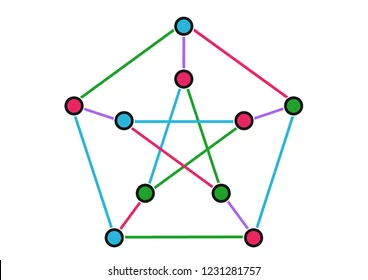
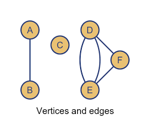
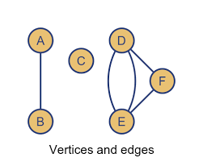
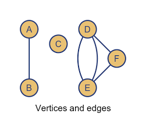

What is a Graph?
A graph is a data structure that consists of a set of vertices (nodes) and edges (connections between the nodes). Graphs are widely used to model relationships between objects, such as in social networks, computer networks, transportation systems, and many other fields.
Where are Graphs Used?
Graphs have various real-world applications, such as:
- Social Networks: Representing relationships between people, like friendships or followers.
- Transportation: Modeling roads, flight paths, or subway lines to find the shortest path between two locations.
- Computer Networks: Visualizing connections between devices in a network.
- Biology: Mapping genetic sequences or modeling food chains.
- Recommendation Systems: Suggesting products or content based on user preferences.
Example Graphs

 

